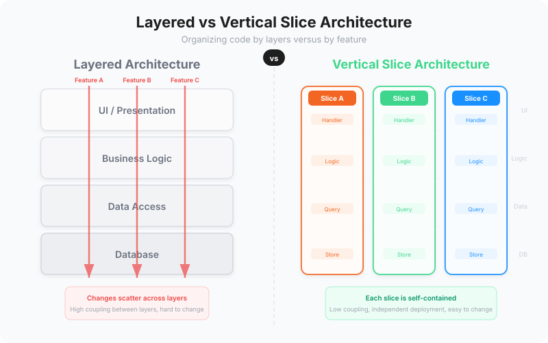

Open any enterprise codebase and you will find a familiar structure: Controllers, Services, Repositories, Models. Four folders. Four layers. A hierarchy so ingrained that most developers never question it. It is how they learned to build software. It is how their colleagues build software. It is how the framework tutorials teach software.
It is also the primary source of accidental complexity in most applications.
Layered architecture was designed to separate concerns. In practice, it separates code that belongs together and couples code that should be independent. The result is a codebase where adding a simple feature requires changing files in four different folders, where a modification to one feature risks breaking three others, and where the cost of change grows exponentially with the size of the system.
Vertical slice architecture offers a fundamentally different organizing principle. Instead of grouping code by technical layer, you group it by feature. Everything needed to implement a single feature lives together: the handler, the data access, the validation, the response mapping. And nothing else.
The Layered Architecture Trap
To understand why vertical slices are necessary, you need to understand exactly how layered architecture fails. Not in theory, where it looks clean and orderly, but in practice, where it creates the very problems it was supposed to prevent.
In a layered architecture, a typical feature involves a controller that receives a request, a service that contains business logic, a repository that handles data access, and a model that represents the data. These four pieces live in four different folders, connected by interfaces and dependency injection.
When the application has five features, this works well enough. You can hold the entire structure in your head. Changes are manageable. But applications do not stay small.
At fifty features, the service layer contains fifty service classes, each potentially depending on several others. The repository layer contains fifty repositories, many of which share database contexts. A change to the OrderService might affect the InventoryService, which depends on the same repository as the ShippingService. The layers have created coupling rather than preventing it.
At five hundred features, the situation becomes untenable. The service layer is a web of interdependencies so complex that no single developer understands it. Changing one service requires understanding its ripple effects through dozens of others. Testing a single feature requires mocking an elaborate tree of dependencies. The layered architecture has become layered spaghetti.
"Layered architecture optimises for a question nobody asks: 'Show me all the controllers.' The question people actually ask is: 'Show me how this feature works.' Vertical slices answer the right question."
What Vertical Slices Are
A vertical slice is a self-contained unit of functionality that cuts through all technical layers. Instead of separating the controller, service, repository, and model into different folders, a vertical slice puts everything needed for a single feature in one place.
Consider an "Add Item to Cart" feature. In a layered architecture, this would involve:
- com.mycompany.application.controllers.CartController.java (method addItem)
- com.mycompany.application.services.CartService.java (method addItem)
- com.mycompany.application.repositories.CartRepository.java (method updateCart)
- com.mycompany.application.models.Cart.java, CartItem.java
In a vertical slice architecture, this entire feature lives in one place:
- com.mycompany.application.features.cart — the package contains everything: REST controller, command handler, validation, data access, and response mapping
Everything you need to understand, modify, test, or debug this feature is in one file or one folder. You do not need to navigate four different locations. You do not need to trace through layers of abstraction. You do not need to understand how this feature relates to others, because by design, it does not.
Independence: the Core Property
The defining characteristic of a vertical slice is independence. Each slice is isolated from every other slice. They share no services, no repositories, no abstractions. If two slices happen to need the same data, each has its own way of accessing it.
This sounds like duplication, and in a narrow sense it is. But it is deliberate, beneficial duplication. The alternative, sharing code between features through common services, creates coupling. And coupling means that a change to one feature can break another.
Consider what happens when the "Add Item to Cart" logic needs to change. In a layered architecture, you modify the CartService, which is also used by "Remove Item," "View Cart," and "Checkout." Your change might break any of them. You need to test all of them. You need to understand all of them.
In a vertical slice architecture, you modify the AddItemToCart handler. It is used by one feature: Add Item to Cart. Nothing else can break. Nothing else needs testing. The blast radius of your change is exactly one feature wide.
Constant Cost of Change
This independence produces a remarkable property: the cost of changing a feature remains constant regardless of the system's size.
In a layered architecture, the cost of change grows as the system grows. More features means more shared services, more dependencies, more potential side effects, more tests to run, more risk per change. This is why enterprise applications slow to a crawl over time. The architecture itself makes every change more expensive than the last.
In a vertical slice architecture, the cost of changing the 500th feature is the same as changing the 5th. The slice is self-contained. It has no dependencies on other slices. Its test suite is independent. The size of the overall system is irrelevant to the cost of changing any individual slice.
This is not a minor benefit. It is the difference between a codebase that becomes progressively harder to work with and one that remains manageable indefinitely. It is the difference between projects that decelerate and projects that maintain velocity.
Parallel Development
When features are independent, they can be developed in parallel without conflicts. Two developers (or two AI agents) can work on two different slices simultaneously with zero risk of interference. No merge conflicts in shared service files. No debates about the "right" abstraction for a shared repository. No waiting for another team to finish their changes to a common module.
This parallelism extends beyond individual developers. Teams can be organized around business capabilities, each owning a set of vertical slices. They can develop, test, and deploy independently. The organizational structure mirrors the architectural structure, and both mirror the business domain.
This alignment is not coincidental. It is a direct consequence of Conway's Law: organizations produce systems that mirror their communication structures. By aligning architecture with business capabilities through vertical slices, you create an architecture that naturally supports how your teams want to work.
How It Works with Event Modeling
Vertical slice architecture and event modeling are natural partners. An event model is, quite literally, a specification composed of vertical slices.
Each slice in an event model, whether it is a command, a read model, or an automation, maps directly to a vertical slice in the codebase. The event model tells you exactly what each slice does: its inputs, its outputs, its business rules. The vertical slice architecture tells you exactly how to organize the implementation: everything for that feature in one place, independent of everything else.
This correspondence has profound implications for development workflow. The event model serves as the work breakdown structure. Each slice is an independently implementable unit of work. Progress can be measured in slices completed. Estimation can be based on slice complexity. The gap between specification and implementation vanishes because they use the same decomposition.
For AI-native development, this pairing is particularly powerful. Each event model slice provides the AI with a precise, bounded specification. The vertical slice architecture ensures that the AI's implementation of one slice cannot interfere with another. Multiple slices can be generated in parallel with confidence that they will integrate cleanly.
Comparison to Traditional Architectures
It is worth contrasting vertical slices with the architectures they replace.
Layered architecture (Controllers/Services/Repositories) groups code by technical role. It creates coupling between features through shared services. Changes to one feature risk breaking others. The cost of change increases over time.
Clean architecture / Onion architecture addresses some of layered architecture's problems by enforcing dependency direction (outer layers depend on inner layers, never the reverse). But it still organizes code by technical layer within each ring. Features are still scattered across multiple folders. The coupling problem is reduced but not eliminated.
Vertical slice architecture groups code by feature. Each feature is fully independent. Changes to one feature cannot affect others. The cost of change is constant. The tradeoff is code duplication between slices, which is deliberately accepted because the coupling it prevents is far more expensive than the duplication it introduces.
The key insight is that not all code organization principles are equally valuable. "Do not repeat yourself" (DRY) is a useful guideline, but taken to an extreme it creates coupling that is worse than the duplication it eliminates. Vertical slices choose independence over reuse, and this is the right choice for most applications.
Making the Transition
Moving from layered architecture to vertical slices does not require a big-bang rewrite. You can transition incrementally. New features are built as vertical slices. Existing features are migrated one at a time, starting with the ones that change most frequently.
The mechanical transformation is straightforward: take the controller action, the service method, and the repository method for a single feature, and move them into a single handler class or folder. Remove the shared abstractions. Inline the dependencies. Run the tests. You now have one vertical slice, and the rest of the system is unaffected.
Over time, the layered sections of the codebase shrink and the vertical slices grow. The shared services become thinner. The coupling decreases. The velocity increases. And at some point, you look at the codebase and realize that every feature is independent, every change is localized, and the architecture is working for you instead of against you.
That is the promise of vertical slice architecture. Not a theoretical elegance but a practical transformation in how you build and maintain software. The end of layered spaghetti. The beginning of manageable complexity.